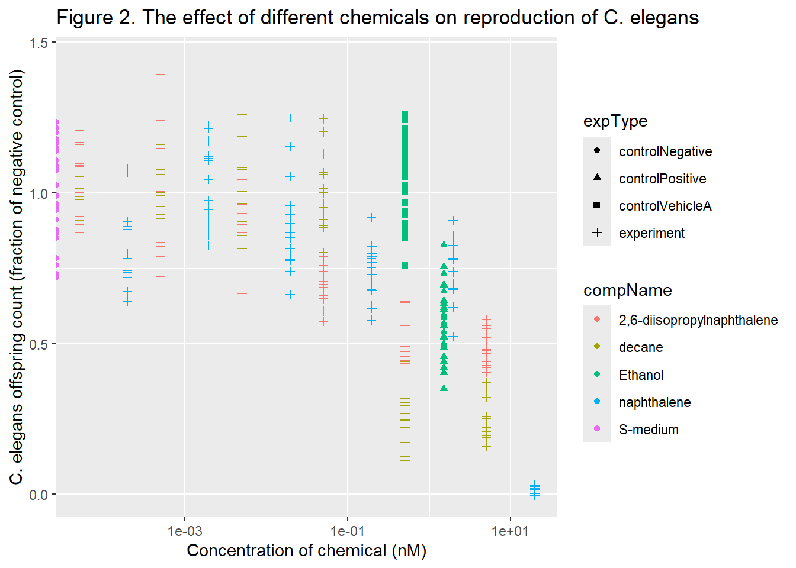

4 Reproduceerbare data-analyse
4.1 Doel
Het doel van deze opdracht is om een verkregen dataset op een reproduceerbare manier weer te geven. De dataset geeft het aantal C. elegans nakomelingen weer na blootstelling aan verschillende concentraties van verschillende chemicaliën. Voor de analyse worden de variabelen RawData(aantal nakomelingen), compName(naam van de chemicaliën), compConcentration(concentratie van de chemicaliën) en expType(onderscheid tussen experimentele condities en controles) gebruikt.
4.2 Laden van de data
De data wordt eerst ingelezen in R vanuit een Excel bestand.
elegans_data <- read_excel("~/dsfb2_workflows_portfolio/raw_data/CE.LIQ.FLOW.062_Tidydata.xlsx")
head(elegans_data)## # A tibble: 6 × 34
## plateRow plateColumn vialNr dropCode expType expReplicate expName
## <lgl> <lgl> <dbl> <chr> <chr> <dbl> <chr>
## 1 NA NA 1 a experiment 3 CE.LIQ.FLOW.062
## 2 NA NA 1 b experiment 3 CE.LIQ.FLOW.062
## 3 NA NA 1 c experiment 3 CE.LIQ.FLOW.062
## 4 NA NA 1 d experiment 3 CE.LIQ.FLOW.062
## 5 NA NA 1 e experiment 3 CE.LIQ.FLOW.062
## 6 NA NA 2 a experiment 3 CE.LIQ.FLOW.062
## # ℹ 27 more variables: expDate <dttm>, expResearcher <chr>, expTime <dbl>,
## # expUnit <chr>, expVolumeCounted <dbl>, RawData <dbl>, compCASRN <chr>,
## # compName <chr>, compConcentration <chr>, compUnit <chr>,
## # compDelivery <chr>, compVehicle <chr>, elegansStrain <chr>,
## # elegansInput <dbl>, bacterialStrain <chr>, bacterialTreatment <chr>,
## # bacterialOD600 <dbl>, bacterialConcX <dbl>, bacterialVolume <dbl>,
## # bacterialVolUnit <chr>, incubationVial <chr>, incubationVolume <dbl>, …De weergegeven datatypes voor de benodigde variabelen zijn als volgt: RawData(dbl), compName(chr), compConcentration(chr). Voor compConcentration zou een numerieke waarde worden verwacht.
elegans_data_num <- elegans_data %>% mutate(compConcentration = as.numeric(compConcentration))
head(elegans_data_num)## # A tibble: 6 × 34
## plateRow plateColumn vialNr dropCode expType expReplicate expName
## <lgl> <lgl> <dbl> <chr> <chr> <dbl> <chr>
## 1 NA NA 1 a experiment 3 CE.LIQ.FLOW.062
## 2 NA NA 1 b experiment 3 CE.LIQ.FLOW.062
## 3 NA NA 1 c experiment 3 CE.LIQ.FLOW.062
## 4 NA NA 1 d experiment 3 CE.LIQ.FLOW.062
## 5 NA NA 1 e experiment 3 CE.LIQ.FLOW.062
## 6 NA NA 2 a experiment 3 CE.LIQ.FLOW.062
## # ℹ 27 more variables: expDate <dttm>, expResearcher <chr>, expTime <dbl>,
## # expUnit <chr>, expVolumeCounted <dbl>, RawData <dbl>, compCASRN <chr>,
## # compName <chr>, compConcentration <dbl>, compUnit <chr>,
## # compDelivery <chr>, compVehicle <chr>, elegansStrain <chr>,
## # elegansInput <dbl>, bacterialStrain <chr>, bacterialTreatment <chr>,
## # bacterialOD600 <dbl>, bacterialConcX <dbl>, bacterialVolume <dbl>,
## # bacterialVolUnit <chr>, incubationVial <chr>, incubationVolume <dbl>, …compConcentration(chr) is nu aangepast naar compConcentration(dbl).
4.3 Data visualisatie
De data wordt weergegeven in een scatterplot, waarin de concentratie van de chemicaliën op de x-as is uitgezet tegen het aantal C. elegans nakomelingen op de y-as. Het onderscheid tussen de verschillende chemicaliën is weergegeven met verschillende kleuren en het onderscheid tussen experimentele condities en controles is weergegeven met verschillende vormen.
De negatieve controle bestaat uit S medium met een concentratie chemicaliën van 0%, oftewel een bepaling van het aantal C. elegans nakomelingen zonder behandeling met chemicaliën. De positieve controle bestaat uit een behandeling met 1.5% ethanol, en de vehicle A controle uit een behandeling met 0.5% ethanol. De negatieve controle wordt gebruikt als referentie voor het aantal nakomelingen van C. elegans onder de gebruikte experimentele omstandigheden zonder toevoeging van chemicaliën. De positieve controle dient als referentie voor het aantal nakomelingen na behandeling met een stof waarvan bekend is dat deze de reproductie van C. elegans negatief beïnvloedt. De vehicle controle heeft een lagere concentratie ethanol, waardoor dit een controle vormt voor het effect van een lagere dosis chemicaliën.
elegans_data_num %>%
ggplot(aes(x=compConcentration, y=RawData)) +
geom_point(aes(color=compName, shape=expType), position="jitter") +
scale_x_log10() +
labs(title="Figure 1. The effect of different chemicals on reproduction of C. elegans",
x="Concentration of chemical (nM)",
y="C. elegans offspring count")
4.4 Data normalisatie
De data wordt nu genormaliseerd voor de negatieve controle. Dit wordt gedaan door het gemiddelde aantal nakomelingen in de negatieve controles te berekenen. Vervolgens wordt het aantal nakomelingen (RawData) voor alle metingen uitgedrukt als fractie van de negatieve controle.
Door de data te normaliseren wordt de data gecorrigeerd voor het aantal nakomelingen dat aanwezig is zonder behandeling met chemicaliën, oftewel bij het weglaten van de experimentele factor. Hierdoor wordt toe- of afname van het aantal nakomelingen en de schaal daarvan beter zichtbaar voor de experimentele condities.
# Bereken het aantal negatieve controle metingen
neg_count <- elegans_data_num %>% filter(expType == "controlNegative") %>% select(RawData) %>% count()
neg_count_value <- neg_count$n[[1]]
# Bereken het totaal aantal nakomelingen in alle negatieve controle metingen
neg_sum <- elegans_data_num %>% filter(expType == "controlNegative") %>% select(RawData) %>% sum()
# Bereken het gemiddelde aantal nakomelingen in de negatieve controle
fraction <- neg_sum/neg_count_value
# Druk alle RawData meetwaarden uit als fractie van de negatieve controle
elegans_data_normalised <- elegans_data_num %>% mutate(RawData_norm = RawData / fraction)De genormaliseerde data wordt weergegeven in een scatterplot.
elegans_data_normalised %>%
ggplot(aes(x=compConcentration, y=RawData_norm)) +
geom_point(aes(color=compName, shape=expType), position="jitter") +
scale_x_log10() +
labs(title="Figure 2. The effect of different chemicals on reproduction of C. elegans",
x="Concentration of chemical (nM)",
y="C. elegans offspring count (fraction of negative control)")
4.5 Conclusie
Uit figuur 2 blijkt dat een toename van de concentratie voor zowel 2,6-diisopropylnapthalene, decane en napthalene leidt tot een daling van het aantal nakomelingen van C. elegans. Dit effect is het sterkst te merken bij decane en bij een hoge concentratie naphtalene (>1e+01).
Vervolgonderzoek kan bestaan uit het bepalen van de IC50-concentratie door middel van een dose-response analyse. Hiervoor kan gebruik worden gemaakt van de functie llogistic() in het drc package in R. Eerst wordt een schatting gemaakt van de parameters, hiervoor kan de drm() functie worden gebruikt. De resultaten hiervan kunnen worden weergegeven met de summary() en coef() functies. Met de ED() functie kan een schatting worden gemaakt van de ED50. Met de predict() functie kan data worden verzameld voor het maken van een plot. Voor het maken van de plot kan gebruik worden gemaakt van de functie plot() of van de ggplot2 package.